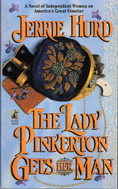

About . . .
The Lady Pinkerton Gets Her Man


Talk about conflicting demands!
In the 1880s there were real Lady Pinkerton Detectives--emphasis on “lady.” They were not to disgrace the Pinkerton Agency by dressing “unseemly” or doing anything that might reflect badly on the company. Never mind that they were also expected to come up with results any way they could.
And a moral dilemma!
The Pinkertons worked for anyone who could afford to hire them. In the American West that was mainly the railroads and the mine owners. For that reason, Pinkertons often got involved strike breaking and land swindles. Work for the agency long enough and you were sure to find yourself on the wrong side. Then what? Sewing and school teaching didn’t pay and lacked adventure.
Add death-defying daring . . .
In the 1880s there were real women missionaries who were willing to risk their lives to save Chinese girls from slavery in places like Rock Springs, Wyoming.
And righteous condemnation . . .
Of course, women missionaries had no use for Lady Pinkertons, whom they considered little better than the girl-prostitutes they were saving.
Now throw the Pinkerton and the missionary together. Make their lives depend on each other and see what happens.

Interesting Tidbits
Donaldina Cameron devoted her life to saving Chinese girls from "abusive circumstances." She worked in San Francisco, but there were other less famous women, most Presbyterian missionaries, who also took up the cause.
The massacre of Chinese miners depicted in this novel really happened September 2, 1885 in Rock Springs, Wyoming.
The California censes of 1852 listed only seven Chinese women in the state. There were more. Most had been smuggled in as prostitutes, many of them slaves--one of the most widely-known secrets of the American West. Check out the movie A Thousand Pieces of Gold.
Allan Pinkerton, founder of the Pinkerton Agency, wrote several detective novels that were bestsellers in his day. These novels were supposedly based on famouse cases that his agency solved, but took liberal dramatic license.
"Private eye" comes from the old Pinkerton logo with the eye that never sleeps.
Kate Warne, a lady Pinkerton, is credited with saving Abraham Lincoln's life. There was a plot to assassinate the newly-elected Lincoln before he reached Washington, D.C. It as Kate who discovered the plot. Without her vigilance, Abraham Lincoln might never have never been inaugurated, never become President. Think how that might have changed history.

Sunday Review
When Jerrie Hurd writes a novel about real women of the Old West, you just know it won't fit neatly into a mold.
In her books, might isn't always right, the guy doesn't always get the girl (or vice versa) and endings often reflect real life: They're ambiguous.
In her first two books, "Miss Ellie's Purple Sage Saloon" and "Kate Burke Shoots the Old West," her women characters were strong, independent and far from perfect. Hurd doesn't detour much from that depiction in her newest novel, "The Lady Pinkerton Gets Her Man."
The Lady Pinkerton in question is Dayle Dobson, who grew up in an orphanage and made a life for herself as a woman detective by being tough. She smokes, drinks, bets on cock fights and (one suspects) hasn't fought too hard to retain her "virtue."
She likes the freedom of being a Pinkerton, but sometimes gets herself into trouble with her outspoken manner.
The book opens with a tense scene where she and two other women are rescuing two young, reportedly reluctant prostitutes from the Tong, who rule the Chinatown section of White Springs, Wyo.
But there are bigger goings-on in this town than sex slavery. The Anarchists are purportedly trying to get miners to strike and shut down the nation's coal supply, and thus its railroads.
Before it's over, Allan Pinkerton, himself, painted as an aging womanizer, comes to White Springs.
Dayle finds herself besotted by an actor who she thinks is the leader of the Anarchists.
And a rip-roaring getaway scene at the end is the stuff of which classic Westerns are made.
Hurd skillfully paints a verbal portrait of a woman torn between her past and her future, between reality and romance, between what's legal and what's humane.
Hurd is adept at creating a sense of place. In that opening scene, she describes the Chinatown Dayle Dobson sees from her rooftop perch:
"The scene was almost as dislocating as the height. In a quieter moment, she might have entertained the romantic notion that she'd been whisked away to some Cantonese village in old Cathay, complete with the smell of herb shops and opium dens. She knew better. This was the Chinatown of White Springs, Wyoming-a slaphappy collection of makeshift shacks, lining a maze of narrow alleyways and tiny garden plots. The structures, many of them two stories, had been thrown together from packing crates and black building paper. The roofs had been tiled with flattened tin cans."
Such detail takes research . . .
Her protagonist doesn't represent a romantic attempt at revisionist history. There were Lady Pinkertons. The West drew many women whose occupations or behavior would not have been accepted in the East.
Hurd is drawn to those women and her stories about them, though fictional, represent a neglected cast of characters who helped create the Old West.
--Linda DuVal, Colorado Springs, Gazette Telegraph